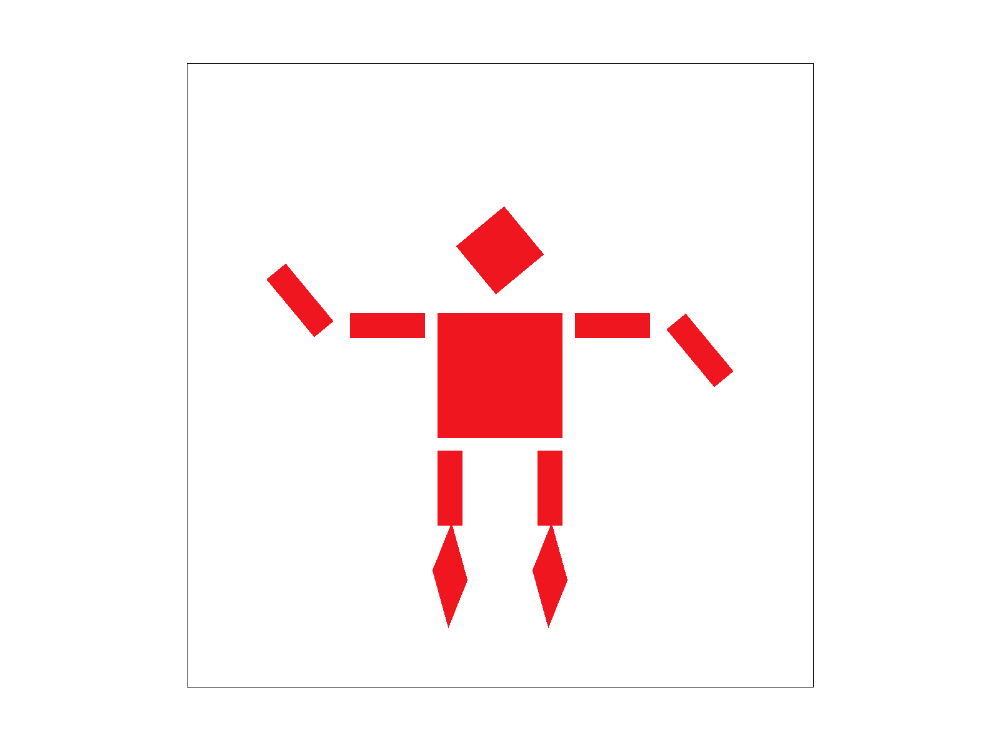

In this project, we build a rasterizer. We first write code to rasterize plain triangles with a single color inside. Then, we apply antialiasing techniques, such as supersampling to triangles to remove aliasing effect of triangles. We also learn to write transformation matrix in homogenous coordinate to transform triangles. We also implement barycentric coordinates to get the color change within a triangle. Now, we can have colorful triangles. In the end, we apply textures to the triangles and use different mipmap levels to achieve the realistic texture mapping effect.
In this task, we are asked to rasterize triangles. A naive implementation is to loop through all pixels in the triangle bounding box. For each pixel, we take its center point (x+0.5, y+0.5) and perform a point-in-triangle test (three line tests) as described in lecture 2 slides. Specifically, compute Li = -(x - X_i)*(Y_(i+1) - Y_i) + (y - Yi)*(X_(i+1) - X_i) and if L1, L2, and L3 >= 0, the point is inside the triangle (>0) or on the triangle edges (=0).
One mistake we made is that we disregraded the winding direction of the triangle. When winding direction is counter-clockwise, we check if L1, L2, and L3 >= 0. When winding direction is clockwise, we check if L1, L2, and L3 <= 0. We find out the winding direction by sum over (X_(i+1) - X_i)*(Y_(i+1) + Y_i). Here completes the naive algorithm.
The algorithm we end up using for extra credit is the incremental triangle traversal. First, we sort vertices by y from top to bottom, so that we can check if the triangle is flat-top, flat-bottom, or neither. The triangle is flat-top if Y0 == Y1. The triangle is flat-bottom if Y1 == Y2. If the triagnle is neither of the two types, then it can be splitted alone Y1 to a bottom-flat traingle at the top and a top-flat traingle at the bottom. We rasterize each of them accordingly. One mistake we made was using the wrong splitting point, so that the traingles were not able to draw.
To rasterize a flat-bottom triangle, we first calculate the inverse of slopes of left and right sides of the triangle. For each row, the inverse of slopse are used to calculate x starting and ending point. Specifically, x starting point is the inverse slope times the difference between current y and bottom vertices y, plus x from the left most vertex. Similarily, x ending point is the inverse slope times the difference between current y and bottom vertices y, plus x from the right most vertex. The things to be careful about are adding 0.5f to coordinates and using consistent vertices order for calculating inverse slope and difference between current y and bottom vertices y. To rasterize a flat-top triangle, the process is very much the same.
Our algorithm is no worse than one that checks each sample within the bounding box of the triangle becuase it only traverse through the area of the triagnle. In other words, the algorithm is O((X0(Y1 - Y2) + X1(Y2 - Y0) + X2(Y0 - Y1))/2). However, one that checks each sample within the bounding box of the triangle takes O((max(Y0, Y1, Y2) - min(Y0, Y1, Y2))*(max(X0, X1, X2) - min(X0, X1, X2))). Looping through the area of the triangle is indeed faster than area of the bounding box of the triangle.
| Traingle | Naive algorithm timing (ms) | Incremental triangle traversal timing (ms) |
|---|---|---|
| Triagnle 1 | 0.0336 | 0.0067 |
| Triagnle 2 | 0.0164 | 0.0032 |
| Triagnle 3 | 0.0089 | 0.0007 |
| Triagnle 4 | 0.0374 | 0.0059 |
| Triagnle 5 | 0.0030 | 0.0008 |
In this task, we need to implement antaliasing for the algorithm that we came up with in task 1. To achieve this, we utilized sample_buffer to store our supersample data, which has a size of the original buffer * sample rate. Then, both dimensions will have a increase in sample rate by sqrt(sample_rate). Supersampling is very useful because we can eliminate aliasing by increasing the sample rate, which removes frequencies above Nyquist frequency before sampling, resulting in a smoother rendering. We also modified RasterizerImp::fill_pixel to implement proper supersampling for points and lines.
Throughout the rasterization pipeline, we modified our iteration process to accomodate for supersampling and, instead of directly render it onto the screen, we put it into the sample_buffer. Then, we downsample the sample_buffer to fit in the original buffer size by taking the average of the nearest sample_rate supersamples and put it into the original buffer, which gets rasterized later. This yields a smoother rasterization result as we can see once we increase the sampling rate:
From above, we can clearly see that supersampling reduces aliasing as we increase the sampling rate.
In order to implement transforms of the object, we deducted the transform matrices corresponding to each types of transforms, and it is rather straightforward regarding each transforms.
We try to make cubeman dancing on its toes and having interesting arm gestures. First, we rotate the lower rectangles of legs by 45 degrees to create a pointy shape (rotate after scaling). Then, we rotate the lower arm rectangles by 45 degrees (rotate before scaling). In the end, we move lower arm rectangles higher for left side and lower for right side just to make cubeman prettier.
The main structure of rasterizing a triangle using barycentric coordinates is similar to rasterizing a triangle in Euclidean coordinates, except the fact that now we need to take the colors defined specifically at the vertices into account. In order to achieve this, we introduced three new variables alpha, beta, and gamma, each corresponds to a vertex of the triangle, which are used in the helper function RasterizerImp::color_at_point. Then, we are able to interpolate the color at each pixel by calculating its alpha, beta, and gamma values, which represents the relative distance porportional to each vertex (or the weight of each vertex at each point), and rasterize the triangle with the algorithm similar to that in task 1.
Pixel sampling is the process that we match each pixel into the texture space and render the corresponding result back to screen space. Therefore, we need to convert the coordinates in the screen space into texture space and then calculate the corresponding color that will be used for display. In this process, we need sampling to retrieve the correct information as we perform coordinate transformations, since the two coordinate systems can be very different. The two methods that we implemented for sampling are Nearest Sampling and Bilinear Sampling.
Nearest Sampling is the method that we find the closest texel in the texture space that corresponds to the original pixel and directly retrieve the information in that texel and rasterize it into the pixel. This results in a rather jaggie rasterization.
Bilinear Sampling is the method that we find the closest 4 texels according to the coordinates in the texture space translated from the original coordinates of the pixel, and interpolated them with a weighted average which is returned to the pixel to render. After rasterization, we can see that using bilinear sampling yields a much smoother image compared to Nearest Sampling.
From the above zoom-ins on Greece, we can see that bilinear sampling yields better results than nearest sampling at given sampling rates. At sample rate = 1 sample/pixel, nearest sampling is giving a very jaggie contour of the land and there are many discontinuities regarding the colors (many sudden changes of colors). However, with bilinear sampling, we can clearly see that the jaggie-ness is less obvious and the colors become more gradient.
When we increase the sample rate to 16 samples/pixel, the image of the landscape becomes more natural and continuous, with less jaggie-ness and color jumps, and the overall image becomes smoother. The large difference between the two methods (especialy at lower sample rates) is because of the fact that bilinear sampling provides one more layer of filtering than nearest sampling which helps remove jaggie-ness and discontinuities, and will become much more significant if we are sampling at lower rates.
Level sampling is a method that provides flexibility across the whole image to prevent aliasing at high frequency areas and blurring at low frequency areas according to the relative depth of view in the texture space. In our case, we utilized Mipmap for level sampling. Without having to compute each pixel at runtime, we precalculate the results for each pixel at each level, and retrieve the result according to the level during rasterization.
To implement level sampling, we introduced new modes of sampling:
1. L_ZERO: we simply sample from the 0-th Mipmap, just like we did in task 5.
2. L_NEAREST: we calculate the level for each pixel in the texture space, find the nearest level accordingly, and retrieve the information from that Mipmap level.
3. L_LINEAR: we calculate the level for each pixel in the texture space, and perform a simple linear interpolation between the nearest two levels in the Mipmap.
To calculate the the Mipmap level D, we first calculated the (u, v) coordinates in the texture space according to (x, y) for each pixel. In order to calculate the differentials, we used an approximation by calculating the (u, v) coordinates for (x + 1, y) and (x, y + 1) that can be used calculate the differentials by taking a subtraction with (x, y) in texture space. Then, wecan simply follow the equations to compute the level:
We clamped the result to the range [0, Mipmap.size() - 1] so that the images can be rendered correctly without out of bound errors or blanks.
Pixel sampling is fast and does not use a lot of memory, but the aliasing effect is very obvious. On the other hand, supersampling is slow as it invokes a lot of computations as we increase the sampling rate, and it consumes a lot more memory. The antialiasing effect is very significant, but the cost is also high. Level sampling, in addition, only requires about 1/3 more of the original memory, is not only fast, but also very good at antialiasing. Since the Mipmap is precalculated, we only need constant time for each pixel to retrieve the rendering data, and it provides a similar effect of supersampling. It does have drawbacks, however, at high frequency areas, that the images becomes blurry.
From the above images, we can see that the aliasing effect on the white lights of Bay Bridge becomes less obvious as we change the combinations of sampling methods. On the overall image, the aliasing effects of other areas are also less severe, and the image becomes smoother.
If you are not participating in the optional art competition, don't worry about this section!